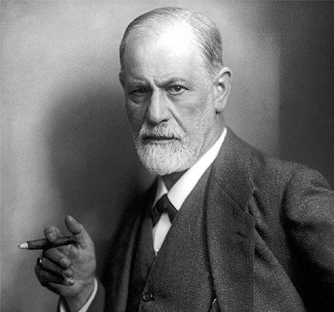

Who Was Sigmund Freud?
Sigmund Freud was an Austrian neurologist and the founder of psychoanalysis who lived from 1856 to 1939. He is remembered as one of the most influential and controversial thinkers of the modern era, developing a theory of the human mind centered on the unconscious, a vast domain of mental life operating beneath ordinary awareness yet powerfully shaping thought, emotion, and behavior.
Freud is especially associated with the claim that human beings are not fully transparent to themselves, arguing that much of what drives human motivation, including repressed desires, unresolved childhood conflicts, and instinctual drives, remains hidden from conscious awareness and can only be accessed indirectly, through dreams, slips of the tongue, and the careful clinical technique of psychoanalysis itself.
Trained originally as a neurologist in Vienna, Freud developed his theories through decades of clinical work with patients suffering from what was then termed hysteria and other nervous disorders, gradually constructing an ambitious and comprehensive model of the mind that extended far beyond clinical treatment into broader claims about religion, civilization, art, and human nature itself.
Because Freud's theories combine clinical observation with sweeping philosophical claims about human nature, his legacy remains deeply contested: while psychoanalysis as clinical practice has declined considerably within mainstream psychiatry, Freud's broader conceptual vocabulary, including the unconscious, repression, and defense mechanisms, continues to shape philosophy, literature, and popular culture profoundly.
Sigmund Freud: Quick Facts
- Name — Sigmund Freud
- Period — 1856–1939
- Born in — Freiberg, Moravia (present-day Příbor, Czech Republic)
- Died in — London, England
- Field — Neurology and the founding of psychoanalysis
- Known for — The unconscious mind, the id, ego, and superego, and dream interpretation
- Major works — The Interpretation of Dreams, Civilization and Its Discontents, The Ego and the Id
- Key collaborators/rivals — Josef Breuer, Carl Jung, Alfred Adler
- Core method — Free association and psychoanalytic treatment
- Historical importance — Founder of psychoanalysis and one of the most influential thinkers of the twentieth century
Freud and the Birth of Psychoanalysis in Vienna

Freud's theories emerged from the intellectually rich environment of fin-de-siècle Vienna, a major center of medicine, science, art, and intellectual debate. During this period, physicians and researchers were increasingly investigating nervous and mental disorders whose symptoms could not always be explained through visible physical injury or disease.
Freud's early medical career developed amid intense debates surrounding hysteria, a historical diagnostic category applied to a wide variety of psychological and physical symptoms. The category was shaped by the medical assumptions and gender prejudices of the period, and many of its nineteenth-century classifications are no longer used in modern medicine.
Scientific interest in hypnosis also influenced the development of Freud's early clinical ideas. During his stay in Paris in 1885–86, Freud studied with the French neurologist Jean-Martin Charcot, whose investigations of hysteria and hypnosis helped convince him that some apparently physical symptoms could have psychological causes.
Freud gradually moved away from hypnotic techniques as he developed his own clinical method. By encouraging patients to speak freely about thoughts, memories, and associations, he came to formulate the method of free association, which became central to the therapeutic practice and theoretical framework of psychoanalysis.
Freud's Early Life and Medical Training
Sigmund Freud was born on 6 May 1856 in Freiberg in Moravia, then part of the Austrian Empire and now Příbor in the Czech Republic. His family moved to Vienna when he was a young child, and the city remained the principal center of his personal and professional life until he fled Nazi Austria for London in 1938.
Freud entered the University of Vienna to study medicine and received his medical degree in 1881. His early professional work focused heavily on neurology and the physiology of the nervous system, reflecting his original ambition to establish himself as a scientific researcher before financial and professional circumstances directed him increasingly toward clinical practice.
A decisive influence on his early clinical development came through the Viennese physician Josef Breuer. Breuer's treatment of Bertha Pappenheim, later known in psychoanalytic literature by the pseudonym "Anna O.," became particularly important to Freud's emerging ideas about the relationship between symptoms, memory, emotional experience, and verbal expression.
Freud later collaborated with Breuer on Studies on Hysteria, published in 1895. Their partnership helped establish an important starting point for psychoanalysis, although Freud subsequently moved beyond Breuer's theoretical framework and developed increasingly distinctive ideas concerning repression, sexuality, unconscious mental processes, and the origins of psychological symptoms.
Freud's Career and the Founding of Psychoanalysis
During the 1890s, Freud developed an increasingly independent clinical method and theoretical system. Moving away from hypnosis, he encouraged patients to communicate whatever thoughts came to mind, even when those thoughts appeared embarrassing, irrelevant, or irrational. This method of free association became a central technique of psychoanalytic investigation.
Freud used the term psychoanalysis to describe both a method for investigating unconscious mental processes and a therapeutic approach based upon that investigation. He argued that symptoms, dreams, memories, fantasies, and everyday errors could reveal conflicts and desires that remained outside ordinary conscious awareness.
His landmark work The Interpretation of Dreams, first published in 1899 but dated 1900, marked a decisive stage in the development of psychoanalysis as a broader theory of mental life. Freud subsequently produced an extensive body of work addressing sexuality, childhood development, religion, civilization, aggression, and the changing structure of the psyche.
Psychoanalysis gradually developed into an international intellectual and therapeutic movement. Freud attracted students and collaborators from across Europe and beyond, although major disagreements eventually produced important divisions. Thinkers such as Carl Jung and Alfred Adler broke from Freud's movement and developed influential psychological theories of their own.
By the early twentieth century, psychoanalysis had become far more than a clinical method. Freud increasingly applied its concepts to literature, mythology, religion, art, and civilization, transforming psychoanalysis into one of the most ambitious and controversial attempts to explain human motivation and culture in modern intellectual history.
What Did Freud Believe?
Freud's theory rests on the fundamental claim that human mental life is not completely transparent to conscious awareness. Thoughts, wishes, memories, and conflicts may operate outside consciousness while still influencing emotion and behavior. This emphasis on unconscious mental processes became the organizing principle of psychoanalysis.
Freud also believed that psychological life is shaped by conflict. Human beings experience competing demands arising from instinctual drives, relationships with other people, moral prohibitions, and the practical requirements of reality. Much of mental life, in his view, consists of attempts to manage these tensions rather than simply to achieve rational control over them.
Early childhood occupied a central position in Freud's theory. He argued that childhood relationships and the development of sexuality leave lasting traces upon adult personality. His specific theory of psychosexual development became one of the most controversial parts of psychoanalysis and remains unsupported in many of its original forms by contemporary developmental psychology.
Freud also maintained that apparently accidental or irrational mental phenomena could possess psychological significance. Dreams, slips of speech, forgotten names, fantasies, and spontaneous associations were treated as possible clues to unconscious processes rather than dismissed automatically as meaningless events.
The scientific status of Freud's broader theoretical system remains deeply contested. Many specific Freudian claims lack strong empirical support, yet his work transformed discussions of unconscious motivation, psychological conflict, sexuality, memory, and the limits of rational self-knowledge, leaving a lasting influence on philosophy and modern culture.
The Unconscious Mind: Freud's Central Discovery
The unconscious forms one of the central concepts of Freud's psychological system. Freud argued that important mental processes occur outside ordinary conscious awareness, including wishes, memories, conflicts, and forms of psychological activity that may nevertheless influence conscious thought and behavior.
Freud's theory of the unconscious was more complex than the popular image of a simple hidden storage area beneath consciousness. Across his writings, he developed different models of the mind, distinguishing between conscious, preconscious, and unconscious processes before later introducing the structural model of the id, ego, and superego.
The familiar iceberg image is often used today to illustrate the distinction between conscious and unconscious mental life, but it should not be treated as a precise diagram devised by Freud himself. It is a later popular metaphor that can simplify a far more complicated psychoanalytic theory.
Freud believed unconscious processes could be investigated indirectly. Dreams, symptoms, slips of speech, fantasies, and free associations were treated as evidence from which hidden conflicts might be inferred. Psychoanalysis therefore relied heavily upon interpretation rather than direct observation of unconscious mental contents.
Freud's greatest historical importance lies not in inventing the general idea that mental processes can occur outside awareness, since earlier philosophers and psychologists had explored related ideas, but in making the unconscious a systematic and dynamic element within a comprehensive theory of psychological conflict and human behavior.
The Id, Ego, and Superego
Freud's later structural model, developed most fully in his 1923 work The Ego and the Id, describes the psyche through three interacting agencies: the id, the ego, and the superego. These should not be understood as separate physical parts of the brain but as theoretical concepts describing different functions and conflicts within mental life.
The id represents the domain most closely associated with instinctual drives and operates according to what Freud called the pleasure principle. It seeks the reduction of tension and the satisfaction of instinctual demands without being governed by ordinary moral standards or practical calculations.
The ego develops in relation to external reality and attempts to mediate among instinctual demands, moral prohibitions, and practical circumstances. It operates according to the reality principle, seeking forms of satisfaction that take account of the consequences and limitations imposed by the external world.
The superego represents the internalization of prohibitions, ideals, and standards associated with parental and wider social authority. It can function as an internal critic, contributing to experiences of guilt, shame, and moral aspiration when the ego's actions or wishes conflict with its standards.
Psychological conflict, in this model, arises from the tensions among these different agencies and the demands of external reality. Freud used the framework to explain anxiety, defense, guilt, and the formation of symptoms, although the structural model remains a theoretical construction rather than an empirically established map of the brain.
Psychosexual Development and the Stages of Childhood
Freud proposed that personality develops through a sequence of psychosexual stages during childhood. In his theory, the term "sexual" had a broader meaning than adult sexual activity and referred to the development of libido and bodily sources of pleasure from the earliest stages of life.
Freud identified the oral, anal, phallic, latency, and genital stages. Each stage involved a changing organization of instinctual life and relationships, while developmental conflict was understood as potentially leaving lasting effects upon personality.
A central concept within this theory was fixation. Freud suggested that unresolved conflicts or unusually intense experiences at particular developmental stages could leave persistent psychological tendencies that might later influence adult behavior and personality.
The theory was historically important because it insisted that early childhood deserves serious attention in the study of personality and psychological development. Freud challenged the assumption that young children possess a psychologically simple inner life unaffected by conflict or complex emotional relationships.
However, Freud's specific psychosexual stages and many of the causal claims associated with fixation have been heavily criticized and lack strong empirical confirmation in contemporary developmental psychology. The theory is therefore best understood both as a major historical contribution and as a highly contested model rather than an accepted scientific account of childhood development.
The Oedipus Complex in Freud's Theory
The Oedipus complex, named after the central figure of Sophocles' tragedy Oedipus Rex, describes a central conflict within Freud's theory of psychosexual development. In its classical formulation, Freud argued that the child develops unconscious desires and rivalries involving the parents during the phallic stage.
Freud's theory is often simplified as a universal desire for the opposite-sex parent combined with rivalry toward the same-sex parent, but his own formulations developed and changed across his writings. The theory became closely connected with questions of identification, sexual development, authority, guilt, and the formation of the superego.
In Freud's account, the eventual transformation of these conflicts contributes to identification with parental authority and the internalization of social prohibitions. The Oedipus complex therefore occupied a much larger theoretical role than a single claim about childhood desire; Freud regarded it as central to his explanation of personality and moral development.
The concept became one of the most famous and controversial elements of psychoanalysis. Later psychologists, anthropologists, feminists, and philosophers criticized its claims to universality, its assumptions about gender and family structure, and its limited empirical support.
Despite these criticisms, the Oedipus complex has remained influential within psychoanalytic theory and has acquired a substantial afterlife in literary criticism, anthropology, film theory, and cultural analysis. Its continuing importance is therefore often intellectual and cultural rather than scientific in the narrow contemporary sense.
Dream Interpretation: The Interpretation of Dreams
The Interpretation of Dreams, first published in 1899 with the date 1900 on its title page, presents Freud's influential argument that dreams are meaningful psychological productions rather than merely random disturbances of sleep. He famously described dreams as a privileged route toward investigating unconscious wishes and conflicts.
Freud distinguished between the manifest content of a dream and its latent content. Manifest content refers to the dream as remembered and reported by the dreamer, while latent content refers to the unconscious thoughts and wishes that Freud believed were transformed into the dream's visible form.
This transformation was described through the concept of dream-work. Freud identified processes such as condensation, in which several ideas may be combined into a single image, and displacement, in which psychological emphasis is shifted from an important idea to a less threatening one.
Freud argued that dream interpretation should rely heavily upon the dreamer's own free associations rather than upon a fixed dictionary assigning universal meanings to particular symbols. The meaning of a dream image, in his method, depended upon its connections within the individual's particular psychological history.
Freud's specific theory that dreams primarily represent disguised wish fulfillment is no longer accepted as a general scientific explanation of dreaming. Nevertheless, The Interpretation of Dreams remains historically influential for its attempt to show that dreams could be studied as psychologically meaningful expressions rather than dismissed as entirely meaningless mental events.
Freudian Slips: Parapraxes in Everyday Life
A Freudian slip, known in psychoanalytic terminology as a parapraxis, refers to an apparently minor error in speech, memory, reading, writing, or action. Examples may include saying an unintended word, forgetting a name, misreading a phrase, or performing an action contrary to one's conscious intention.
Freud examined these phenomena most extensively in The Psychopathology of Everyday Life, originally published in 1901. He argued that many apparently accidental mistakes are psychologically determined and may reveal conflicts, wishes, or intentions that remain partly or entirely outside conscious awareness.
This argument reflected a broader principle of Freud's thought: psychic determinism. Freud believed that mental events, including apparently trivial errors, often have causes and meanings rather than occurring as completely isolated accidents within psychological life.
However, Freud did not claim that every mistake could automatically be decoded through a simple symbolic formula. Psychoanalytic interpretation required attention to the individual's associations and circumstances, although critics have argued that this interpretive method can make Freud's explanations difficult to test independently.
The expression "Freudian slip" has become deeply embedded in popular language. Modern psychology explains many speech and memory errors through cognitive, linguistic, and attentional processes, but Freud's interpretation remains historically important because it challenged the assumption that everyday mistakes are always psychologically insignificant.
Defense Mechanisms in Freudian Psychology
Defense mechanisms describe psychological processes through which the mind manages anxiety, internal conflict, and unacceptable thoughts or impulses. The concept emerged from Freud's psychoanalytic work and was later developed and systematically elaborated by his daughter, Anna Freud, particularly in her influential study The Ego and the Mechanisms of Defence.
In psychoanalytic theory, defenses are closely associated with the activity of the ego. They help the individual manage tensions arising from instinctual demands, moral prohibitions, threatening memories, and external reality, often by altering how particular thoughts or experiences enter consciousness.
Important psychoanalytic defenses include repression, through which unacceptable mental content is kept outside consciousness; projection, through which unwanted qualities or impulses are attributed to others; and denial, involving resistance to acknowledging a painful or threatening aspect of reality.
Sublimation occupies a particularly important place within psychoanalytic thought. Freud used the concept to describe the redirection of instinctual energy toward activities valued by society, including artistic, intellectual, and other forms of creative or productive work.
The language of defense mechanisms has become influential far beyond classical psychoanalysis, although contemporary psychology does not necessarily accept every mechanism in the precise form proposed by Freudian theory. Their lasting importance lies partly in providing a vocabulary for thinking about the ways individuals psychologically manage conflict, anxiety, and emotionally difficult experiences.
Repression in Freud's Theory
Repression is one of the central concepts of Freud's theory of the unconscious. It refers to a process through which particular wishes, memories, or mental representations are prevented from entering ordinary conscious awareness because they are experienced as unacceptable, threatening, or incompatible with other psychological demands.
Freud distinguished repression from the ordinary, conscious act of deliberately choosing not to think about something. Repression, in the psychoanalytic sense, is fundamentally unconscious. The individual is therefore not simply aware of a thought and intentionally hiding it from themselves.
Freud argued that repressed material does not simply disappear. Instead, he believed it continues to exert psychological pressure and may return indirectly through dreams, symptoms, fantasies, slips of speech, and other forms of what psychoanalysis interprets as disguised expression.
This idea became central to Freud's explanation of neurotic symptoms. A symptom could be interpreted as a compromise formation through which conflicting psychological forces achieve a partial and often distorted expression without allowing the underlying conflict to become fully conscious.
Psychoanalytic treatment therefore attempted to make unconscious conflicts increasingly accessible to reflection. Freud's approach did not simply involve recovering forgotten information; it also involved interpreting resistance, repetition, emotional relationships, and the patient's responses within the analytic process itself.
The Pleasure Principle and the Reality Principle
The pleasure principle describes Freud's idea that mental life tends toward the reduction of tension and the avoidance of unpleasure. In his theoretical framework, instinctual demands seek satisfaction and do not initially take account of practical obstacles, social restrictions, or the consequences imposed by external reality.
Freud associated the pleasure principle particularly with the id, although the relationship between these concepts should not be understood as a simple one-to-one division. The pleasure principle is a broader theoretical description of the tendency toward satisfaction and the avoidance of psychological discomfort.
The reality principle describes the modification of this tendency in response to the demands of the external world. The individual learns that immediate satisfaction is not always possible and that desires may need to be delayed, redirected, or pursued through more practical and socially acceptable means.
Freud associated the reality principle with the developing functions of the ego. The ego does not simply eliminate instinctual desire; rather, it attempts to negotiate conditions under which some form of satisfaction can become realistically possible.
The tension between pleasure and reality became an important theme in Freud's broader philosophy of human life. Civilization, morality, work, and social cooperation all require limits upon immediate gratification, creating a persistent conflict between individual desire and the conditions necessary for living with others.
Eros and Thanatos: Freud's Theory of Life and Death Drives
In his later theory, particularly after Beyond the Pleasure Principle (1920), Freud proposed a new and highly controversial account of instinctual life. He increasingly described psychological conflict in terms of two broad classes of drives: Eros, or the life drives, and the death drive, often referred to as Thanatos in later discussions.
Eros refers to forces associated with binding, preservation, sexuality, and the creation of increasingly complex unities. In Freud's later theory, the life drives included but were not simply identical with sexual desire; they represented a broader tendency toward connection and the preservation or combination of living forms.
Freud's concept of the death drive was more speculative and difficult to define. He proposed that living organisms may possess a fundamental tendency toward reducing tension and ultimately returning to an earlier inorganic state, while outward expressions of destructive energy could contribute to aggression and hostility.
Freud's interest in repetition played an important role in developing this theory. He examined phenomena in which individuals appeared to repeat painful experiences rather than simply seek pleasure, including traumatic repetition, and argued that such behavior created difficulties for an explanation based solely upon the pleasure principle.
The death drive became one of the most controversial elements of Freud's metapsychology. Many psychologists and even some psychoanalytic thinkers rejected or substantially revised it, yet the concept continued to influence Freud's later reflections on aggression, war, violence, and the persistent tensions underlying civilization.
Free Association and the Psychoanalytic Method
Free association became one of the defining methods of psychoanalysis. Freud encouraged patients to express whatever thoughts, memories, images, or feelings came into their minds without deliberately selecting only those that appeared logical, important, or socially acceptable.
The method developed as Freud gradually moved away from the hypnotic procedures used during his earlier clinical work. He came to believe that interruptions, hesitations, forgotten material, and apparent irrelevancies in a patient's speech could themselves provide clues to psychological resistance and unconscious conflict.
Free association was based upon the psychoanalytic assumption that a person's chain of thought is not entirely random. Freud believed that when conscious censorship was relaxed, connections could emerge that allowed the analyst and patient to investigate thoughts and conflicts not immediately available through ordinary deliberate introspection.
The analyst's role was not merely to record everything said. Classical psychoanalysis involved interpretation, attention to recurring themes, and the examination of resistance, as well as the emotional relationship that developed between patient and analyst, later conceptualized centrally through ideas such as transference.
The traditional psychoanalytic setting, often associated with a patient reclining on a couch while the analyst sits outside the patient's direct line of sight, became one of the most recognizable symbols of Freud's method. Although modern psychotherapy includes many approaches very different from classical psychoanalysis, free association remains a defining feature of the Freudian clinical tradition.
Freud on Religion: The Future of an Illusion
In his 1927 work The Future of an Illusion, Freud extended psychoanalytic interpretation beyond the individual mind to examine the psychological foundations of religion. He argued that religious ideas should be understood, at least in part, as responses to profound human desires for protection, order, justice, and reassurance in the face of suffering and the unpredictable forces of nature.
Freud compared religious belief to the psychological condition of childhood dependence. Just as the child experiences parents as sources of protection against danger, he suggested that human beings may imagine powerful divine figures capable of protecting them against the threats and uncertainties of existence. Religion, in this interpretation, represents the persistence and transformation of deeply rooted wishes rather than evidence produced by rational demonstration.
Freud used the term illusion in a specific sense. An illusion, for him, was a belief motivated primarily by the fulfillment of a wish; it was not necessarily identical with a simple mistake or deliberate falsehood. Nevertheless, Freud believed that the truth of religious doctrines could not be established merely by showing that they satisfied important psychological needs.
His critique was therefore partly psychological and partly cultural. Freud argued that religious systems had historically helped societies regulate behavior and manage fear, but he questioned whether modern civilization should continue to depend upon religious authority as its primary foundation for morality and social order.
Freud's argument remains controversial because explaining the psychological origins or functions of a belief does not by itself settle whether that belief is true. Religious thinkers and philosophers have therefore challenged Freud's attempt to move from a psychoanalytic account of religious motivation toward broader conclusions about the intellectual status of religion.
Despite these criticisms, The Future of an Illusion remains one of the most influential modern psychological critiques of religion. It helped establish an enduring philosophical question: can a belief's psychological origins be separated from the independent question of whether the belief accurately describes reality?
Freud on Civilization: Civilization and Its Discontents

Civilization and Its Discontents, published in 1930, presents one of Freud's most ambitious attempts to apply psychoanalysis to the problem of human society. Freud examines the conflict between the instinctual demands of individuals and the restrictions required for people to live together within stable and organized communities.
Civilization, in Freud's account, depends upon forms of restraint. Human beings cannot freely pursue every sexual or aggressive impulse without threatening social cooperation and security. Laws, moral standards, institutions, work, and cultural practices therefore require individuals to redirect, postpone, or renounce certain forms of instinctual satisfaction.
This restraint produces a fundamental source of discontent. Freud argued that civilization provides protection and makes collective life possible, yet it can also generate frustration because individuals experience the demands of social order as limits upon instinctual freedom. He did not regard this tension as something that could simply be eliminated through political reform.
Aggression occupies a particularly important place in the work. Freud argued that civilization must find ways to restrain destructive impulses, but this restraint can be internalized and directed against the individual as guilt. The development of the superego therefore links social authority with the psychological experience of conscience and self-punishment.
Freud's analysis presents no simple vision of inevitable human progress. Scientific and technological advancement can increase human power over nature without automatically resolving the psychological conflicts created by aggression, desire, guilt, and dependence upon others. Civilization remains both necessary and psychologically costly.
Civilization and Its Discontents continues to be widely read within philosophy, social theory, cultural criticism, and psychoanalytic thought. Although its theoretical assumptions remain contested, the work poses an enduring question about whether the conditions that make collective human life possible inevitably require forms of personal sacrifice and psychological restraint.
Freud, Josef Breuer, and Studies on Hysteria
Freud's early collaboration with the Viennese physician Josef Breuer produced Studies on Hysteria, published in 1895. The work is widely regarded as an important precursor to psychoanalysis because it explored the relationship between psychological experience, memory, emotion, and physical symptoms.
Its most famous case concerned Bertha Pappenheim, identified in the book under the pseudonym "Anna O.". Breuer, rather than Freud, was her principal physician. Her case later became closely associated with the origins of psychoanalysis, although historians have also questioned and complicated some of the traditional accounts of her treatment and recovery.
Breuer described how speaking about emotionally charged experiences could sometimes be associated with relief from particular symptoms. Pappenheim herself reportedly referred to this form of treatment as the "talking cure" and, on another occasion, as "chimney sweeping." These expressions became famous symbols of the developing importance of speech within psychoanalytic therapy.
Studies on Hysteria proposed that certain symptoms could be connected with emotionally significant experiences that had not been adequately expressed or consciously integrated. Freud later developed this approach into a more systematic theory centered on repression, unconscious conflict, sexuality, and the interpretation of symptoms.
The collaboration between Freud and Breuer did not last. Their theoretical approaches diverged, particularly as Freud increasingly emphasized the role of sexuality and developed a broader theory of unconscious psychological conflict. The precise reasons for their separation have sometimes been simplified in popular accounts and should not be reduced to a single disagreement.
Despite the limitations of its nineteenth-century medical framework, Studies on Hysteria remains historically significant. It helped establish the idea that psychological symptoms could be studied through a patient's experiences, memories, emotions, and patterns of speech, creating an important foundation for Freud's later development of psychoanalysis as a distinct theory and therapeutic tradition.
Freud and Carl Jung: Collaboration and Split
Carl Jung became one of Freud's most important early collaborators and was, for a time, regarded by Freud as a leading figure in the future of the international psychoanalytic movement. Their relationship developed through an intense intellectual partnership, personal friendship, and extensive correspondence, but increasingly serious theoretical disagreements eventually made their continued collaboration impossible.
One major disagreement concerned the nature and scope of the unconscious. Freud emphasized unconscious wishes, conflicts, memories, and instinctual processes rooted in the personal psychological history of the individual, while Jung gradually developed a broader theory that included the collective unconscious.
Jung's collective unconscious referred to inherited or universal structures of psychic life expressed through recurring symbolic forms that he later called archetypes. This theory moved significantly beyond Freud's understanding of repression and personal unconscious conflict, proposing that mythological and symbolic patterns could emerge across cultures without being reducible solely to an individual's personal experience.
Sexuality also became a major point of disagreement. Jung increasingly rejected Freud's tendency to give sexual drives a central explanatory role in psychological development and instead developed a broader conception of psychic energy. Their theoretical differences became inseparable from growing personal and institutional tensions within the psychoanalytic movement.
The relationship effectively broke down in 1913, marking one of the most consequential divisions in the early history of psychoanalysis. Jung went on to develop analytical psychology, while Freud continued to develop classical psychoanalysis, leaving behind two distinct traditions with very different conceptions of the unconscious, symbolism, personality, and psychological development.
Freud and Alfred Adler
Alfred Adler was another important early member of Freud's psychoanalytic circle who eventually developed a sharply independent psychological theory. Originally involved in the Vienna Psychoanalytic Society, Adler became increasingly dissatisfied with Freud's emphasis on sexuality and the explanatory framework of classical psychoanalysis.
Adler developed the school later known as individual psychology. He placed particular emphasis on feelings of inferiority, the individual's efforts to overcome perceived weakness, and the development of a distinctive style of life through which a person responds to the challenges of existence.
Unlike Freud's theory, Adler gave social relationships and purposeful striving a more central role in personality. His psychology emphasized social interest, cooperation, and the ways individuals seek competence, significance, and belonging within a wider community, rather than explaining motivation primarily through sexual instinct.
Adler separated from Freud's circle in 1911, before the final rupture between Freud and Jung. His departure demonstrated that the early psychoanalytic movement was never intellectually uniform and that significant disagreements existed over the fundamental forces shaping human personality and psychological development.
Although Adler rejected many central Freudian doctrines, his work emerged from the same broader intellectual environment that made unconscious motivation and psychological conflict important subjects of modern inquiry. Individual psychology subsequently became an influential tradition in its own right and contributed ideas that would later resonate within psychotherapy, education, and theories of personality.
Freud's Famous Case Studies
Freud developed and illustrated much of his psychoanalytic theory through detailed accounts of individual patients and clinical cases. These case studies became central to the formation of psychoanalysis, providing Freud with material through which he developed theories about repression, sexuality, dreams, symptoms, childhood experience, and the dynamics of unconscious conflict.
Among the most famous is the case of "Dora", the pseudonym Freud gave to Ida Bauer. His analysis of the case explored hysteria, sexuality, and the emotional relationship between patient and analyst, particularly the phenomenon of transference. Freud later acknowledged important limitations in the treatment after Dora ended the analysis prematurely.
Another celebrated case was "Little Hans", a young boy whose fear of horses Freud interpreted partly through the framework of the Oedipus complex. Freud did not conduct the treatment in the ordinary sense directly himself; much of the information came through Hans's father, a fact that later scholars have considered important when evaluating the case and its interpretation.
The "Wolf Man", Sergei Pankejeff, became the subject of one of Freud's most elaborate case histories. Freud interpreted the patient's childhood memories and famous dream of white wolves as evidence relevant to his theories of infantile sexuality and the psychological consequences of early experience.
Freud's case studies remain historically significant but have generated extensive scholarly debate. Historians, clinicians, and philosophers have questioned the reliability of retrospective reporting, the degree to which theoretical expectations shaped interpretation, and whether individual clinical narratives can provide sufficient evidence for broad claims about universal human psychology.
Criticisms of Freud and Psychoanalysis
Freud's theories have faced sustained criticism from psychologists, philosophers, historians, and scientists. One important objection concerns the nature of the evidence on which many of his theories were built, particularly his reliance on detailed clinical cases rather than the kinds of controlled and replicable studies expected in much of modern experimental psychology.
Critics have also challenged the scope of Freud's conclusions. Much of his clinical work emerged from a relatively specific social and historical environment, raising questions about whether observations drawn from his patients could legitimately support universal claims about childhood, sexuality, personality, gender, and human motivation across different cultures and historical periods.
Freud's strong emphasis on sexuality has been another major source of controversy. Although sexuality and early childhood experience are now recognized as important areas of psychological development, many contemporary researchers reject Freud's specific psychosexual model and his attempt to explain a wide range of psychological phenomena through the transformation and repression of sexual drives.
Additional criticism concerns psychoanalytic interpretation itself. Because dreams, symptoms, memories, and associations can often be interpreted in multiple ways, critics argue that analysts may risk reading theoretical assumptions into ambiguous material rather than allowing the evidence independently to determine the conclusion.
At the same time, criticism of Freud should not be confused with the claim that his entire legacy has been discarded. Some individual ideas associated with unconscious processing, psychological defense, early relationships, and the importance of emotional conflict have continued to influence later psychology, often in forms substantially different from Freud's original theories.
Is Freud's Theory Scientific? Popper's Falsifiability Critique
The philosopher Karl Popper offered one of the most influential philosophical criticisms of psychoanalysis. Popper argued that a genuinely scientific theory must be falsifiable, meaning that it must expose itself to possible evidence that could, in principle, demonstrate the theory to be false.
Popper believed that psychoanalytic explanations often appeared capable of accommodating almost any possible behavior after it had occurred. If a person behaved in one way, the behavior might be explained through an unconscious motive; if the person behaved in the opposite way, that too might be explained through a different unconscious mechanism.
For Popper, this interpretive flexibility created a problem of testability. A theory that can explain every possible outcome without clearly specifying what evidence would count against it risks becoming difficult to distinguish from a framework that merely reinterprets events after the fact rather than making genuinely risky empirical predictions.
However, Popper's criticism has itself been extensively debated. Philosophers including Adolf Grünbaum argued that particular Freudian claims can generate testable consequences and that Freud himself was sometimes concerned with the possibility of empirical refutation. The question is therefore more complicated than simply declaring all of psychoanalysis either scientific or permanently beyond scientific investigation.
Modern discussions consequently distinguish between different aspects of Freud's legacy. Some psychoanalytic hypotheses can be subjected to empirical investigation, while broader interpretive and metapsychological claims remain more difficult to test. The continuing debate concerns not only Freud, but also the larger philosophical problem of how scientific theories should be distinguished from interpretive systems.
Freud's Influence on Later Psychology and Philosophy
Despite extensive criticism of many specific Freudian theories, Freud's conceptual influence on twentieth-century thought was enormous. His work made unconscious motivation, repression, conflict, sexuality, and the limits of self-knowledge central subjects not only within psychology but also within philosophy, literary theory, social thought, and cultural criticism.
Later psychoanalytic thinkers substantially revised Freud's original system. Figures such as Anna Freud, Melanie Klein, Jacques Lacan, and others developed different approaches to the ego, childhood, language, desire, and the structure of unconscious mental life, demonstrating that psychoanalysis evolved into numerous competing traditions rather than remaining a single unchanged doctrine.
Freud also influenced philosophers and social theorists who attempted to connect psychological conflict with wider structures of society. Thinkers associated with critical theory, for example, engaged with psychoanalysis in attempts to understand authority, repression, culture, and the psychological conditions through which social and political power may be experienced by individuals.
Freud's influence on philosophy of mind was equally significant. His work challenged the traditional assumption that conscious introspection provides transparent access to the causes of human thought and action, raising enduring questions about self-deception, hidden motivation, and the relationship between conscious experience and unconscious processes.
Contemporary cognitive science and neuroscience also recognize that much mental processing occurs outside conscious awareness, although modern scientific concepts of unconscious processing differ substantially from Freud's dynamic unconscious and do not automatically confirm his specific theories of repression, psychosexual development, or symbolic dream interpretation.
Freud's Influence on Art, Literature, and Surrealism
Freud's theories of dreams, desire, repression, and unconscious mental life exercised a wide influence on twentieth-century art and literature. The Surrealist movement, in particular, drew inspiration from the expanding cultural importance of psychoanalysis and from the possibility that ordinary conscious reason might not exhaust the creative capacities of the human mind.
Surrealist artists and writers explored dreams, unexpected associations, desire, and irrational imagery as potential sources of artistic creation. André Breton and other Surrealists were strongly interested in unconscious processes, although their relationship to Freud's actual theories was selective, creative, and sometimes significantly different from psychoanalytic clinical practice.
Techniques associated with automatism and automatic writing sought to reduce deliberate conscious control and allow unexpected verbal or visual associations to emerge. These practices have often been linked with Freudian free association, though their historical origins and artistic development also involved influences beyond Freud and psychoanalysis.
Freud himself was not simply an unquestioning supporter of Surrealism, and the movement transformed psychoanalytic ideas for artistic rather than therapeutic purposes. Nevertheless, the Freudian emphasis on dreams and the hidden dimensions of mental life provided an important intellectual background for Surrealism's attempt to challenge ordinary rational perception.
Beyond Surrealism, concepts such as repression, unconscious desire, symbolism, and the Oedipus complex became deeply embedded in twentieth-century literary criticism and cultural theory. Even where scholars rejected Freud's particular interpretations, his work helped establish psychological and unconscious motivation as major dimensions through which literature and art could be interpreted.
Freud's Later Life and Exile from Nazi-Occupied Vienna
Freud's final years were overshadowed by the political catastrophe unfolding in Europe. As an Austrian Jew and one of the world's most famous intellectuals, he faced increasing danger after Nazi Germany annexed Austria in March 1938, an event known as the Anschluss.
The Nazi takeover immediately intensified the persecution of Jewish citizens and institutions. Freud's home and publishing activities were threatened, members of his family were subjected to intimidation, and the increasingly hostile political situation made remaining safely in Vienna impossible.
Freud's departure required considerable international assistance. Friends, colleagues, diplomats, and influential supporters helped secure the financial and political arrangements necessary for him and several members of his family to leave Austria. His escape was therefore not an easy or automatic departure from Vienna.
Freud arrived in London in 1938 and spent the final period of his life there. He continued to receive visitors and remained engaged with intellectual and psychoanalytic affairs despite the severe physical suffering caused by his long illness.
Freud's escape did not save every member of his family. Several of his sisters who remained in Vienna were later murdered in Nazi camps, making his final years inseparable from the broader history of the persecution and destruction suffered by European Jews during the Holocaust.
Freud's Death and Final Illness
Freud suffered for many years from a severe illness involving cancer of the mouth and jaw, a condition strongly associated with his long history of heavy cigar smoking. His treatment involved numerous medical and surgical procedures, and the final decades of his life were marked by significant pain and physical difficulty.
Despite his illness, Freud continued to write and remained involved in the psychoanalytic movement. His determination to continue working reflected the extraordinary importance intellectual activity held throughout his life, although his physical condition became progressively more difficult during his final years.
In September 1939, as his illness reached its terminal stage, Freud discussed the relief of his suffering with his physician Max Schur. Schur later described administering increasing doses of morphine with Freud's consent, an event that has often been interpreted as physician-assisted dying, although the historical and ethical terminology applied to the event remains subject to careful distinction.
Freud died in London on September 23, 1939, only weeks after the beginning of the Second World War in Europe. His death ended a life that had extended from the intellectual world of the nineteenth-century Austro-Hungarian Empire into one of the darkest political crises of the twentieth century.
Sigmund Freud: Main Theoretical Ideas
Freud's theoretical work developed over several decades, and some of his later ideas modified or replaced earlier formulations. Nevertheless, his philosophy and psychology are commonly understood through a number of recurring concepts that together form the central vocabulary of the psychoanalytic tradition.
The Unconscious Mind
Freud argued that important mental processes occur outside ordinary conscious awareness. Unconscious wishes, conflicts, memories, and defenses may nevertheless influence emotion, thought, dreams, symptoms, and behavior, challenging the belief that human beings possess complete conscious knowledge of their own motives.
The Id, Ego, and Superego
In his later structural model, Freud described the psyche through the interacting concepts of the id, ego, and superego. These represent different functions and demands within psychological life, involving instinctual desire, negotiation with reality, and internalized moral standards.
Repression and Defense Mechanisms
Freud argued that psychological conflict can lead the mind to keep threatening or unacceptable material outside conscious awareness. Repression became central to this account, while later psychoanalytic theory developed a broader vocabulary of defense mechanisms for understanding how individuals manage anxiety and internal conflict.
Childhood as the Root of Adult Personality
Freud gave early childhood an importance rarely matched by previous theories of the mind. He argued that early relationships and conflicts leave lasting psychological traces, although his specific theory of psychosexual stages and the universal role of the Oedipus complex remains deeply contested.
Meaningful Interpretation of Dreams and Slips
Freud maintained that dreams, slips of speech, forgotten names, and other apparently irrational phenomena could contain psychologically meaningful patterns. His interpretive approach sought to connect such events with unconscious wishes and conflicts, even though many of his particular explanations remain disputed by later psychology.
What Do We Actually Know About Freud's Theories?
Freud's life and published work belong to well-documented modern history. His books, letters, clinical writings, and the records of the psychoanalytic movement provide extensive material for historical study, although historians continue to debate aspects of his self-presentation, clinical reporting, and the interpretation of his intellectual development.
Relatively Well-Attested
- Freud was born in Freiberg, Moravia in 1856 and died in London in 1939.
- He collaborated with Josef Breuer before independently developing psychoanalysis.
- He authored The Interpretation of Dreams and Civilization and Its Discontents, among many other works.
- Both Carl Jung and Alfred Adler broke from his psychoanalytic circle to found independent schools.
- He was forced into exile from Vienna in 1938 due to Nazi persecution.
Areas of Ongoing Scholarly Debate
- Whether psychoanalysis meets accepted criteria for scientific validity.
- How reliably Freud's clinical case studies support his broader theoretical claims.
- The continuing relevance of specific concepts such as the Oedipus complex and the death drive.
- How Freud's theories should be assessed against later developments in cognitive science and neuroscience.
The distinction between historical certainty and theoretical validity is especially important in Freud's case. Historians can often establish what Freud wrote, whom he treated, and how his intellectual movement developed, while the separate question of whether his explanations are scientifically correct remains a matter of philosophical and empirical evaluation.
Why Is Sigmund Freud Important in Philosophy?
Freud is important to philosophy because he profoundly challenged the assumption that human beings possess transparent and reliable knowledge of their own minds. His theory of unconscious mental life raised serious questions about self-knowledge, rationality, freedom, responsibility, desire, and the relationship between conscious thought and hidden psychological processes.
His work also transformed philosophical discussions of the human subject. Rather than treating the individual as a fully unified rational agent, Freud described the mind as a site of conflict in which conscious intentions may coexist with unconscious wishes, internal prohibitions, and motives that remain partly inaccessible to introspection.
His theoretical legacy therefore raises a fundamental question that remains central to philosophy of mind: How much of human thought, motivation, and behavior is genuinely accessible to conscious self-knowledge, and how much operates through hidden processes beyond direct introspective awareness?
Freud also became important to philosophy through the enormous range of later thinkers who engaged critically with his work. Existentialists, phenomenologists, Marxist theorists, critical theorists, feminists, philosophers of language, and philosophers of mind have variously adopted, transformed, or rejected psychoanalytic ideas.
Freud's importance does not depend upon accepting every specific claim in his theoretical system. Many of his central scientific explanations remain controversial or have been substantially revised, yet his challenge to the sovereignty of conscious reason permanently changed the intellectual landscape in which questions about the mind, desire, culture, and human self-understanding are discussed.
Sigmund Freud Explained Simply
Sigmund Freud was an Austrian neurologist who founded psychoanalysis, arguing that much of human thought and behavior is shaped by an unconscious mind containing repressed desires and childhood conflicts hidden from ordinary awareness.
Instead of treating the conscious mind as the whole of mental life, Freud's theory divides the psyche into the id, ego, and superego, and treats dreams, slips of speech, and psychological symptoms as meaningful clues to unconscious conflict.
- Thinker: Sigmund Freud
- Period: 1856–1939
- Field: Psychoanalysis and philosophy of mind
- Major work: The Interpretation of Dreams
- Central concern: The hidden, unconscious structure of the mind
- Key concepts: The unconscious, repression, the id, ego, and superego
A Principle Central to Freud's Theory
“The mind is like an iceberg, it floats with one-seventh of its bulk above water.”
Frequently Asked Questions About Sigmund Freud
Who was Sigmund Freud?
Sigmund Freud was an Austrian neurologist who founded psychoanalysis, developing influential theories of the unconscious mind, the id, ego, and superego, and dream interpretation that reshaped modern psychology and philosophy of mind.
What is the unconscious mind in Freud's theory?
The unconscious mind, in Freud's theory, is the vast portion of mental life operating outside conscious awareness, containing repressed desires, memories, and drives that nonetheless continue to influence thought, emotion, and behavior.
What are the id, ego, and superego?
The id is the primitive, instinctual part of the psyche seeking immediate pleasure, the superego is the internalized moral conscience, and the ego mediates between the two while managing the demands of external reality.
What is the Oedipus complex?
The Oedipus complex is Freud's theory that young children pass through a developmental stage involving unconscious desire for the opposite-sex parent and rivalry with the same-sex parent.
What is a Freudian slip?
A Freudian slip is a seemingly minor error in speech or memory that Freud argued reveals an underlying unconscious thought or conflict rather than being purely accidental.
Is psychoanalysis considered a science?
Psychoanalysis remains contested as a science; philosopher Karl Popper argued its claims are not falsifiable, while defenders maintain it offers genuine explanatory insight into mental life even if it does not fit a strict experimental model.
What is Freud's theory in Civilization and Its Discontents?
Freud argued that organized society requires suppressing powerful instinctual drives, particularly aggression and sexuality, producing chronic tension and unhappiness as a permanent feature of civilized life.
Why did Carl Jung and Alfred Adler break from Freud?
Jung disagreed with Freud's emphasis on individual sexual repression, developing his own theory of a collective unconscious, while Adler emphasized feelings of inferiority and the drive for power over Freud's focus on sexuality.
How did Freud die?
Freud died in London in 1939 from complications of oral cancer, after arranging with his physician for increased morphine doses to relieve his suffering in his final days.
Why is Freud important today?
Freud remains important because his concept of the unconscious mind continues to influence psychology, philosophy of mind, and cultural and literary analysis, even as specific elements of his theory remain widely debated.
Related Thinkers
Sigmund Freud belongs to the wider tradition of modern philosophy of mind and psychology. Explore thinkers who shaped and responded to many of the same questions about the mind and human nature.
Philosophy Branches Connected to Freud
Freud's theoretical legacy is particularly important for epistemology, where philosophers investigate self-knowledge and the limits of introspection, and for ethics, which examines the tension between instinctual desire and moral obligation.
Why Sigmund Freud Still Matters
Freud did not simply propose a new clinical treatment for nervous disorders; he fundamentally challenged the assumption that conscious self-awareness could ever fully capture the true workings of the human mind, a challenge whose implications continue to be felt well beyond clinical psychology.
Yet the questions associated with Freud remain fundamental to philosophy: How much of the mind lies beyond conscious access? Can dreams and everyday errors reveal genuine psychological truth? What does civilization actually cost the individual psyche?
The theory of psychoanalysis he developed across decades of clinical practice and theoretical writing transformed these questions into one of the most influential, and most contested, bodies of thought in modern intellectual history. His emphasis on the unconscious, repression, and the hidden architecture of the mind made Sigmund Freud one of the most significant and widely discussed thinkers of the modern era.
Explore Great Philosophers